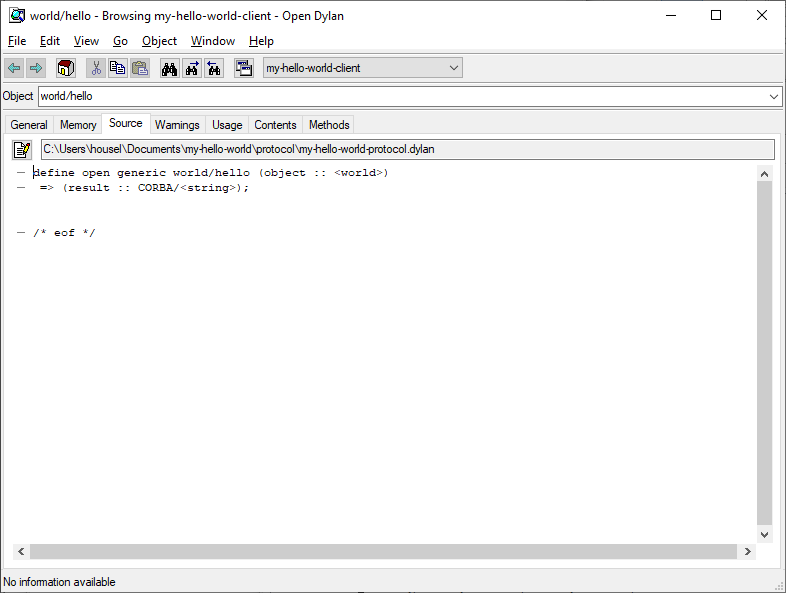

Quick Start Tutorial¶
About this chapter¶
In this chapter, we develop a simple example application that illustrates the basics of writing CORBA-based applications using Open Dylan.
The aim of this chapter is to show the sort of coding involved in using CORBA with Open Dylan, and get a client/server application up and running quickly. It is not concerned so much with explaining how things work. Subsequent chapters go into more detail, using a deeper example, and explaining the approach we have taken to implementing the CORBA architecture for Dylan.
A CORBA-based Hello World¶
This chapter’s example is an implementation of the standard Hello World application, using Dylan and CORBA. In this version of Hello World, a client application asks a server application for a string. When the client receives the string, it prints it to the standard output, and then exits.
These are the basic steps we will take to create this application:
Create the projects.
We use the Open Dylan IDE New Project wizard to create client and server CORBA projects.
Define the interface.
We define the interface to the server using OMG’s Interface Definition Language (IDL).
Implement the client.
Implement the server.
Build and test the application.
Creating the projects¶
In this section we create projects for the client and server parts of our CORBA-based Hello World application.
To create these projects we use the New Project wizard. For CORBA projects, the wizard can create either a client project, a server project, or both at once. Since we are writing both the client and the server, we are going to ask the wizard to create both our projects at once.
Select from the Open Dylan main window, or click the New Project button on the toolbar.
The New Project wizard appears.
We are going to choose “CORBA Client and/or Server” as the project type. In the wizard, a CORBA project is a project defined relative to an IDL file. The IDL file is a file containing a declaration of the CORBA interfaces that the server implements and the client accesses, written in OMG’s Interface Definition Language.
Select “CORBA Client and/or Server” in the Project type section.
Click Next.
The wizard moves to a second page.

The CORBA project page in the New Project wizard¶
The second page, shown in Figure 2.1, has several options for building CORBA projects. This is where we can specify whether to create a client project, a server project, or both. We can also choose an IDL file to base projects upon, or let the wizard create an empty one that we can edit after the projects themselves have been created.
If you choose a CORBA IDL file on which to base the project, by default the file is copied into the project folder that you choose on the next page (or is left there if it is already in that folder). You can explicitly choose to leave an existing IDL file where it is and the generated projects will refer to it.
For the sake of this example, however, we will let the wizard generate a blank IDL file for us, and then we will write the IDL by hand.
Uncheck the “Use existing IDL file” check box.
Check the “Client” box and the “Server” box.
Next to the “Client” and “Server” check boxes are options for the kind of supporting code we want to generate. Like other IDL compilers, Open Dylan’s can create CORBA client stub and server skeleton code from IDL declarations. This stub and skeleton code, which is generated in the form of separate libraries, takes care of the details of communication between CORBA clients and servers.
The IDL compiler (which we call Scepter) also generates a protocol library that represents the spirit of the IDL declarations in Dylan, using generic function declarations, class declarations, and so on.
The protocol library is the public interface to the service provided by the servers and used by the clients, and is used by the stub and skeleton code libraries. On the server side, the protocol defines what you must implement by extending the skeleton implementation in the normal way, by adding methods, subclassing, and so on. On the client side, you use the protocol to invoke operations on the CORBA objects you have implemented in the server.
We will see more about protocol, stub, and skeleton libraries in Writing and Compiling IDL.
Make sure the “Client using” setting is “protocol and stubs” and the “Server using” setting is “protocol, stubs, and skeletons”.
The wizard will set up the client and server projects so that, when they are built, the IDL compiler will be invoked automatically to read the IDL and create stub, skeleton, and protocol projects.
Click Next.
The wizard moves to a third page. This page is the wizard’s standard page for entering the project name and location.
On this page we enter the name used to create the client and server projects. Because the wizard is going to create two projects, it uses the name we enter as the stem of each project name, and adds a suffix to identify the project as a client (
-client) or server (-server).Type
my-hello-worldinto the Name field.From this name, the wizard generates projects called My-Hello-World-Client and My-Hello-World-Server.
Click Advanced…
The Advanced Project Settings dialog appears.
Change the “Windows Subsystem” setting to “Windows Console” and click OK.
This step is necessary because the application is going to run in console mode, that is, without windowing.
Click Next.
The wizard moves to a fourth page. This page is the wizard’s standard page for specifying how you want to choose libraries for your project.
Select the “Minimal” option.
The choice of “Minimal” makes the Hello World projects use only two libraries: the
common-dylanlibrary, which provides the Dylan language and basic extensions, and thedylan-orblibrary, which provides the Open Dylan ORB implementation.Click Next.
The wizard moves to a fifth and final page. This page is the wizard’s standard page for entering source file header keywords.
Make any header keyword changes you want.
Click Finish.
The client and server projects are now fully defined. After you click Finish, the wizard creates the appropriate project files on disk. Then two project windows appear: one for the client project, My-Hello-World-Client, and one for the server project, My-Hello-World-Server.
Defining the interface¶
In this section we declare the IDL interface that the Hello World client and server will communicate across. This is the usual first step in developing a CORBA-based application in Dylan.
We declare the interface in a single file that must have the extension
.idl. Recall that when creating the client and server projects, we
unchecked the “Use existing IDL file” option on the second wizard
page. Instead of letting the client and server projects refer to an
existing IDL file, the wizard created a dummy file into which we can
write our IDL interface.
Both the client and server projects point to the dummy IDL file via a
file called my-hello-world.spec. Spec files, or Open Dylan
Tool Specification files, contain special information for building
projects. The file my-hello-world.spec is part of each project’s list
of sources, but it is a different file in each project.
Double-click on
my-hello-world.specin the Sources page of either project window.The spec file opens in an editor window.
The client project’s spec file looks like this:
Origin: OMG-IDL Idl-File: ..\my-hello-world.idl Stubs: yes
The server project’s spec file looks like this:
Origin: OMG-IDL Idl-File: ..\my-hello-world.idl Skeletons: yes
Both spec files contain an
Idl-File:keyword statement saying that the filemy-hello-world.idl, which is in the parent folder of both My-Hello-World-Client and My-Hello-World-Server, should be compiled along with each project’s Dylan sources. We can ignore the other details for the moment.Choose in either project window, and navigate to the project’s parent folder containing
my-hello-world.idl.Hint: clicking the General tab in either the client or server project window shows where the project resides on your machine.
Select
my-hello-world.idland click Open.The dummy IDL file opens in an editor window.
The dummy IDL file initially contains only a comment and no IDL declarations. We must write these ourselves. For Hello World, the IDL is simply:
interface world { string hello(); };This IDL declaration says there are CORBA objects of a kind called
world, and that there is an operation calledhelloonworldobjects that takes no arguments and returns a string. Servers implementworldand clients callhelloon instances ofworld.Enter the IDL declaration above into the
my-hello-world.idlfile.Save
my-hello-world.idlwith .
Now that we have written the IDL, we can run the IDL compiler over it to produce stub, skeleton, and protocol code for the client and server parts of the application.
Generating stub, skeleton, protocol code from IDL¶
There are two ways of generating the stub, skeleton, and protocol code for a CORBA application. We can either run the IDL compiler on the command-line, or we can run it within the Open Dylan development environment. The second option is more convenient given that we are already using the environment.
Go to the project window for the My-Hello-World-Client project.
Simply building the project in the normal way is enough to invoke the IDL compiler. This convenience is thanks to the spec file in the project Sources list: when the build gets to the spec file, the build system looks in it to see what to do with it. The spec file in My-Hello-World-Client states with the
Origin:andIdl-File:keywords that there is a OMG IDL file to compile, and with theStubs:keyword that a project containing client stub code should be generated.If we build My-Hello-World-Client now, the IDL compiler will read the IDL file and create the stubs code. Meanwhile the rest of the Dylan code in the project is also compiled.
Select from the project window’s menu.
The spec file in My-Hello-World-Server is similar, but asks for skeletons instead of stubs.
Select in the My-Hello-World-Server project window.
After the build, each project’s Sources page is updated to include new subprojects. The subprojects are as follows.
In the client project:
- My-Hello-World-Stubs
The stubs project contains implementation glue code that enables a client application to call a CORBA object in a server application over a network, using a Dylan protocol generated from the IDL.
In the server project:
- My-Hello-World-Skeletons
The skeletons project contains implementation glue code that enables server applications implementing CORBA objects to be called over a network by the Dylan protocol functions generated from the IDL.
In addition, a protocol subproject appears in both the stubs and the skeletons projects:
- My-Hello-World-Protocol
The protocol project contains open classes and generic functions, representing the spirit of the IDL declarations in Dylan. It is used in clients to call operations on CORBA objects in a server, and in a server as the basis of the implementation of those objects.
A browsing detour¶
The next step would be to implement the client and server. But it is instructive to take a brief detour and look at what is inside the new projects that we gained by compiling our small IDL file.
Go to the My-Hello-World-Client project window and select the Sources page.
Expand the My-Hello-World-Stubs subproject.
As expected, the My-Hello-World-Stubs project contains the protocol project, My-Hello-World-Protocol.
Expand the My-Hello-World-Protocol subproject.
The
my-hello-world-protocol.dylanfile contains the automatically generated Dylan protocol representing our IDL for Hello World.Expand the
my-hello-world-protocol.dylanfile.Double-click on the generic function for
world/hello.The browser appears.
A Dylan generic function mapped from an IDL declaration.¶
Notice how the Dylan code has been mapped from the IDL. An IDL operation whose full name was
world::hellohas been mapped to a Dylan open generic function whose name isworld/hello. The mapping rules are part of what is called an IDL binding for Dylan. There is a draft standard for the Dylan IDL binding in An IDL Binding for Dylan.Select the browser’s Methods page.
Double-click on the only method listed.
The browser now shows the source of the method that takes care of bundling up arguments into a request and invoking the ORB in order to send it to the server. This method was generated automatically from the IDL, and “just works” — you do not have to worry about it, or other such methods that the compiler generates.
Note
Since the compiler will regenerate these files if the IDL is changed, you should not edit them by hand.
Implementing the client¶
In this section we implement the client side of the Hello World application.
The basic requirements for a client are to initialize an ORB, then obtain references to the CORBA objects that it wants to invoke operations upon. The client can then proceed with execution in the normal way; as necessary, it can invoke the operations on the CORBA objects to which it has references.
Initializing the ORB¶
The first thing our client needs to do is to initialize the Open Dylan
ORB. CORBA provides a standard operation for this, called
orb_init. This is just one of many operations that ORBs must
offer. The name is an IDL-style name (in fact it is a pseudo-IDL or
PIDL name) that is mapped to Dylan just like the IDL we wrote for
Hello World earlier. In the Open Dylan ORB this operation is
invoked as corba/orb-init.
An ORB initialization call looks like this:
let orb = corba/orb-init(make(corba/<arg-list>),
"Open Dylan ORB")
Ignore the arguments for the moment — they are explained in
Chapter 5. The call returns an object of class corba/<orb>. We need
to keep our ORB reference around, so we bind this value to the name
orb.
Obtaining an object reference¶
The next thing our client needs to do is to get a reference to a CORBA
object implementing Hello World. Recall from Defining the interface
that our IDL defined CORBA objects of a kind called world:
interface world {
string hello();
}
The client needs a reference to a world object. An object
reference is just CORBA’s way of allowing CORBA objects to be
identified and communicated with. Once our client has a reference to a
world object it can call the hello operation and get the string it
needs to print out.
There is more to say about object references and how they are
obtained. For now, all we need to know is one way that clients can
obtain object references is by reading them from files, where servers
have placed them in a string form — a so-called stringified object
reference. The client can get the string and convert it into a Dylan
object that represents object references. To do this, it uses a Dylan
ORB utility called corba/orb/file-to-object.
Thus, given a shared file hello.ior, located as follows:
c:\temp\hello.ior
Our client can get a reference as follows:
let world = as(<world>,
corba/orb/file-to-object(orb, "c:\\temp\\hello.ior"))
The corba/orb/file-to-object method could have been implemented as
follows using the standard ORB utility corba/orb/string-to-object,
but corba/orb/file-to-object is provided as a convenience.
define method corba/orb/file-to-object (orb :: corba/<orb>,
file :: <string>)
=> (object)
with-open-file(stream = file, direction: #"input")
corba/orb/string-to-object(orb, as(<string>,
stream-contents(stream)));
end;
end method;
The let world ... expression takes the name of the shared file,
and passes it (and the ORB value we obtained earlier) to the helper
method file-to-object. The file-to-object method calls
corba/orb/string-to-object to obtain the reference and make a
Dylan object representing it. Then the returned Dylan object is
coerced into an instance of the class <world>. That class is one
of the protocol library classes generated from the IDL, and was
intended to represent world objects in Dylan. (In fact the object is
coerced to be an instance of an internal concrete subclass of
<world> — <world> is just the public protocol class.)
The extra backslashes in the file name string serve as escape characters.
Invoking an operation¶
Our client has now initialized the ORB and obtained the world
object reference it required. It is ready to invoke the hello
operation and receive the string that it needs to print out.
Because all the initialization work is complete, this step is
trivial. We simply call the hello operation directly, and let the
underlying stub code deal with the business of sending the request to
the server and receiving the response.
The IDL for hello was translated into the Dylan protocol library,
My-Hello-World-Protocol, as world/hello. Though in IDL the operation
did not have any arguments, when calling it from the Dylan client we
do need to pass the reference of the CORBA object we are invoking the
operation upon, since ORBs need to know which object, of perhaps many
the client has references to, is actually being called.
The call is therefore simply:
world/hello(world)
The implementation of the client is therefore complete after the following call:
format-out("%s\n", world/hello(world));
This code gets the string and then prints it to the standard output.
Complete code for the client¶
The following code is the complete implementation of the client. Enter it into the file my-hello-world-client.dylan in the My-Hello-World-Client project.
Module: corba-hello-world-client
Synopsis: Distributed Hello World
Author: Jason Trenouth
Copyright: Original Code is Copyright (c) 1995-2004 Functional Objects, Inc.
All rights reserved.
License: See License.txt in this distribution for details.
Warranty: Distributed WITHOUT WARRANTY OF ANY KIND
define constant $hello-world-ior-file = "hello.ior";
define method main () => ()
let orb = corba/orb-init(make(corba/<arg-list>), "Open Dylan ORB");
let world = as(<world>, corba/orb/file-to-object(orb, $hello-world-ior-file));
format-out("%s\n", world/hello(world));
end method main;
begin
main();
end;
Implementing the server¶
In this section we implement the server side of the Hello World application.
There are two parts to implementing a server. We need to implement the CORBA objects that the server offers, and we also need to perform ORB initialization and other administrative tasks that get the server ready to service potential clients.
A note on terminology¶
CORBA objects are what CORBA servers implement and provide to CORBA clients. In CORBA, an object is basically a collection of code that supports an interface declared as an IDL interface .
Because server applications are typically not much more than the infrastructural wrapper around the code that implements the CORBA object, it is often convenient to talk of a server as if it is the CORBA object, or a collection of CORBA objects. Here and elsewhere, we occasionally use the term “CORBA object” where “server” might also be applicable.
Implementing the server’s CORBA objects¶
According to the IDL we wrote, the server is supposed to provide
world objects, which have an operation called hello. How do we
implement world and hello in the server?
An IDL interface, such as world, is represented in Dylan using a
class. Operations in an interface are represented as methods on the
class representing the interface.
The server skeletons library we generated by compiling our IDL file
contains the underlying CORBA framework for world objects. This
framework is represented by the <world-servant> Dylan class.
A servant is the CORBA way of connecting a request to an object implementation. In this case the mapping will be one-to-one: a servant will be the object implementation. However, many objects could be implemented by one servant, or conversely, many servants could implement a single object. These more complicated applications of servants need not concern us now.
The <world-servant> class is a subclass of <world> (again from
the protocol library) and another class that provides CORBA
functionality. By extending <world-servant> we provide a Dylan
implementation of world and inherit the CORBA functionality that our
objects will need in order to communicate with their clients:
define class <world-implementation> (<world-servant>)
end class;
As noted in Invoking an operation, the hello operation
name was mapped into Dylan as the world/hello generic function,
defined on <world>. To implement hello, we write a world/hello
method on <world-implementation>:
define method world/hello
(world :: <world-implementation>)
=> (hello :: <string>)
"Hello World!"
end method;
This method returns the string that will be passed back to the
client. With this, the Dylan implementation of the world
object type we described in IDL is complete.
ORB and object initialization¶
The other part of writing the server is to perform the initializations necessary for the server to ready itself for CORBA-based interactions with a client.
Some of this coding is similar to what we did on the client side. The first thing we do is initialize, and get a reference to, the Open Dylan ORB. This step is exactly the same as on the client side:
let orb = corba/orb-init(make(corba/<arg-list>),
"Open Dylan ORB")
Next, we can make an instance of the object (servant) class:
let impl = make(<world-implementation>);
To make this object instance accessible to clients using CORBA, it has to be visible in the CORBA world, not just in the Dylan server application that instantiated it. To do this we use an object adapter — part of an ORB that deals with activating CORBA objects and connecting them to the outside world.
The Open Dylan ORB supports CORBA’s portable object adapter (POA)
standard. To start the business of activating our world object, we
get a reference to the POA:
let poa = corba/orb/resolve-initial-references(orb, "RootPOA");
This is another call to a standard CORBA operation. The operation
resolve_initial_references takes an ORB reference and a list of
string names for CORBA services, and returns object references for
them.
The name used in the call above is the Dylan translation of the
pseudo-IDL name CORBA::ORB::resolve_initial_references. The call
resolves the name "RootPOA", which is the standard name for the
basic POA service, into an object reference.
The next step is to get the POA to create a reference for our world object instance that can be given to a client. There are several ways to get object references from a POA; this is one of them:
let world = portableserver/poa/servant-to-reference(poa, impl);
Next, we want to publish the reference where the client can find
it. Recall that the client looks for the reference in
c:temphello.ior , expecting to find a string there to translate back
into a reference with the ORB utility
corba/orb/file-to-object. The ORB also offers the opposite
operation, available in Dylan as corba/orb/object-to-file, Thus
the next piece of code is:
corba/orb/object-to-file(orb, "c:\\temp\\hello.ior", world);
The corba/orb/object-to-file method could have been defined using
the standard ORB operation corba/orb/object-to-string as follows,
but corba/orb/object-to-file is provided by the Dylan ORB as a
convenience.
define method corba/orb/object-to-file (orb :: corba/<orb>,
file :: <string>,
object :: corba/<object>)
with-open-file(stream = file, direction: #"output")
write(stream, corba/orb/object-to-string(orb, object));
end;
end method;
Next, we have to allow the POA manager managing this POA to start processing requests. (A POA manager is an object that allows us to control the operation of a POA.) We use these standard POA calls:
let manager = portableserver/poa/the-poamanager(poa);
portableserver/poamanager/activate(manager);
Finally, on the servant side we need to set the ORB running to receive client requests:
corba/orb/run(orb);
Complete code for the server¶
The following code is the complete implementation of the server. Enter
it into the file my-hello-world-server.dylan in the
My-Hello-World-Server project.
Module: corba-hello-world-server
Synopsis: Distributed Hello World
Author: Jason Trenouth
Copyright: Original Code is Copyright (c) 1995-2004 Functional Objects, Inc.
All rights reserved.
License: See License.txt in this distribution for details.
Warranty: Distributed WITHOUT WARRANTY OF ANY KIND
define constant $hello-world-ior-file = "hello.ior";
define class <world-implementation> (<world-servant>)
end class;
define method world/hello (world :: <world-implementation>)
=> (hello :: <string>)
"Hello World!"
end method;
define method main () => ()
let orb = corba/orb-init(make(corba/<arg-list>), "Open Dylan ORB");
let poa = corba/orb/resolve-initial-references(orb, "RootPOA");
let impl = make(<world-implementation>);
let world = portableserver/poa/servant-to-reference(poa, impl);
corba/orb/object-to-file(orb, $hello-world-ior-file, world);
let manager = portableserver/poa/the-poamanager(poa);
portableserver/poamanager/activate(manager);
corba/orb/run(orb);
end method main;
begin
main();
end;
Building and testing the application¶
In this section we build and test the completed CORBA-based Hello World application.
Once you have replaced the dummy code in
my-hello-world-client.dylan with the code in section 2.5.4,
and the dummy code in my-hello-world-server.dylan with the
code in section 2.6.4, the client and server applications are ready to
build again.
Choose in the My-Hello-World-Client project.
Choose the My-Hello-World-Server project.
Now, you can run the application to test that it works. You need to run the server first so that it is waiting to receive calls from the client by the time the client makes its call.
Choose in the My-Hello-World-Server project.
Wait until a console window appears. The server is now running.
Choose in the My-Hello-World-Client project.
The client pops up another console window, into which it prints
Hello World! before the development environment traps its exit and
presents a confirmation dialog.
Try quitting the client by clicking OK, and then running it repeatedly. Each time it gets a string from the same server, which keeps running all the while.
An interesting exercise is to set breakpoints in the client and server code to trap the request and open debugger windows as the request passes from client to server.
This concludes the first example.